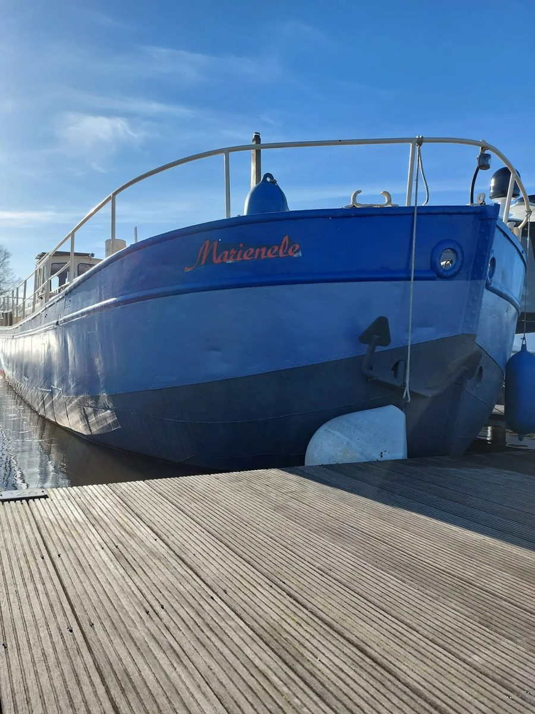
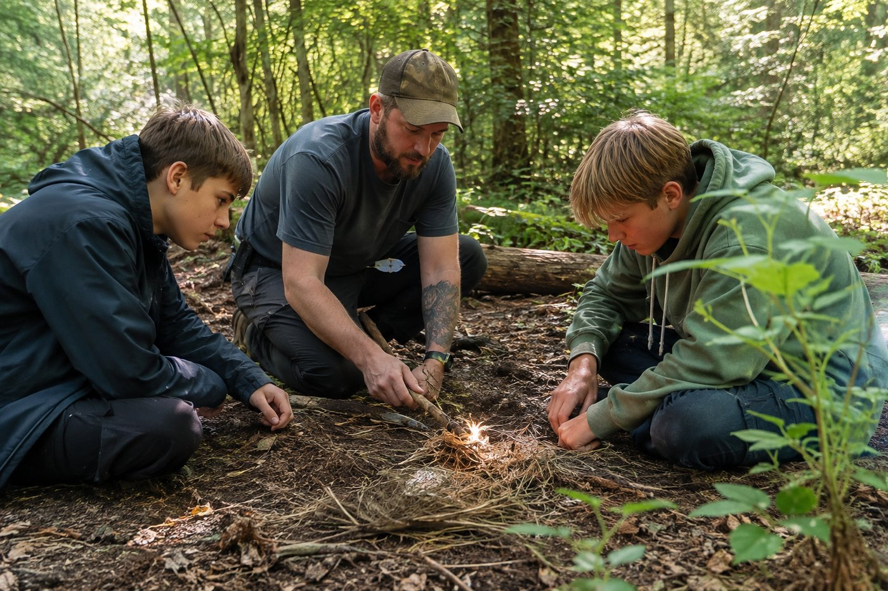
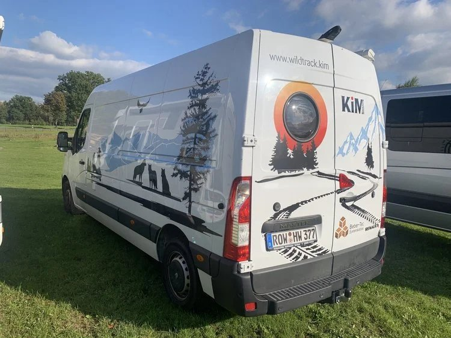
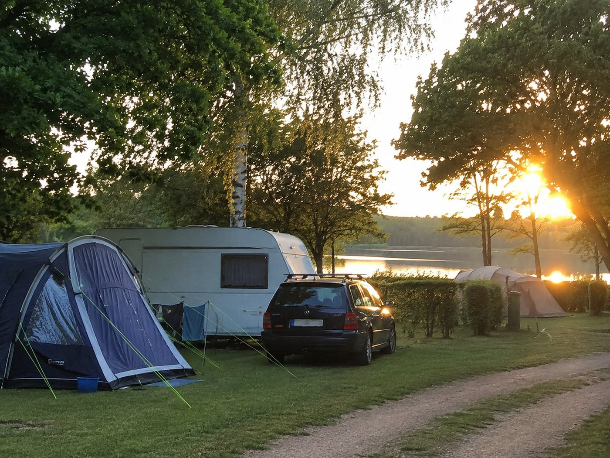
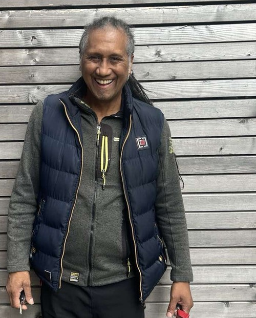
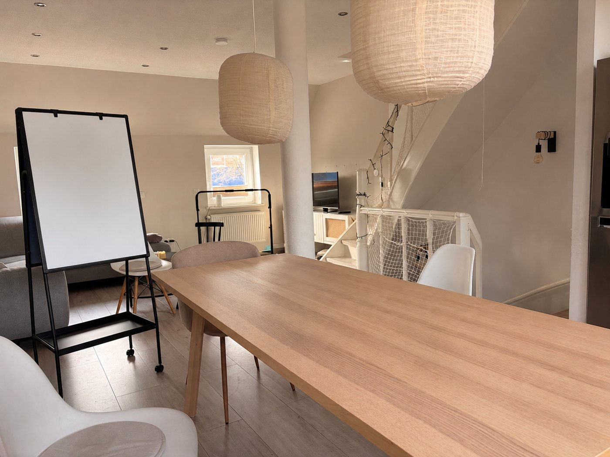
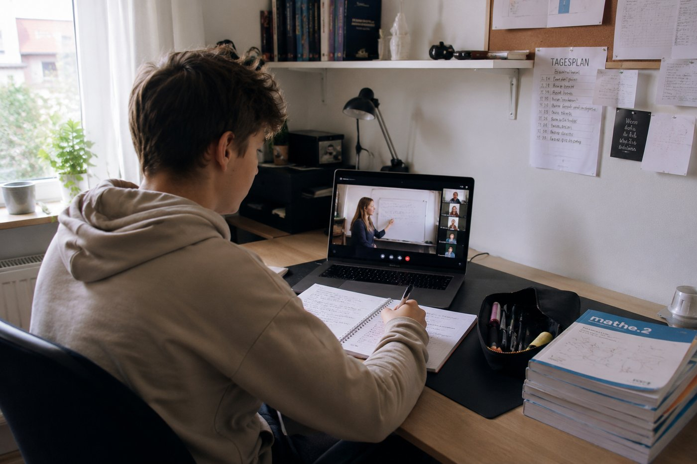

Konzept & Ansatz
Clearing, Betreuungsschlüssel und ein klarer Ablauf — statt Zufall.
Mobile Einzelfallhilfen wirken am besten, wenn ein interdisziplinäres Team gut zusammenarbeitet und die individualpädagogische Arbeit transparent dokumentiert wird.
Grundhaltung
Beziehung vor Regel — Struktur trotzdem nicht verhandelbar.
Kinder und Jugendliche, die zu uns kommen, haben häufig mehrere stationäre oder ambulante Maßnahmen hinter sich. Klassische Gruppensettings stoßen bei ihnen an Grenzen: zu viel Nähe zu Gleichaltrigen mit ähnlicher Dynamik, zu wenig individuelle Aufmerksamkeit, zu viel Distanz zur eigenen Bezugsperson.
Mobile ISE setzt genau hier an: ein:e feste Betreuer:in, ein wechselndes Umfeld, das eingefahrene Muster unterbricht, und ein Tagesablauf, der sich an den Bedürfnissen des Jugendlichen orientiert — nicht an einer Gruppenstruktur.
Rechtlicher Rahmen
Eingebettet in die Systematik der Kinder- und Jugendhilfe.
Wildfang Reisen GmbH führt die Reisemaßnahme als Intensive Sozialpädagogische Einzelbetreuung (ISE) im Rahmen des SGB VIII durch — als eigenständiges Tochterunternehmen der Kinder- und Jugendhilfe WILDFANG GmbH, in enger fachlicher Abstimmung mit dem beauftragenden Jugendamt.
Alle Schritte — von der Anfrage bis zum Finden einer Anschlussmaßnahme — werden dokumentiert und mit dem zuständigen Jugendamt kommuniziert, damit die Maßnahme jederzeit nachvollziehbar bleibt.
Im Mittelpunkt steht die Entwicklung des jungen Menschen — nicht die reine Betreuung.
Stabilisierung
Ruhe und Sicherheit in einer akuten Krisensituation herstellen.
Beziehungsaufbau
Eine tragfähige Beziehung als Basis für die Stabilisierung und Weiterentwicklung.
Struktur & Selbstregulation
Verlässliche Abläufe, die dem Jugendlichen Orientierung geben.
Ziele des Hilfeplans
Die Maßnahme arbeitet konkret auf die im Hilfeplan vereinbarten Ziele hin.
Anschlussperspektive
Entwicklung einer tragfähigen Perspektive für die Zeit nach der Reise.
Ablauf einer Maßnahme
Von der ersten Anfrage bis zur Anschlussperspektive.
Anfrage & erstes Gespräch
Das Jugendamt kontaktiert Sarah Walter als pädagogische Fachbereichsleitung. Wir klären die Ausgangssituation, bisherige Maßnahmen und die konkrete Fragestellung.
Auftragsklärung
Gemeinsam prüfen wir, ob mobile ISE fachlich passend ist: Belastungsfaktoren, Risiken, gesundheitliche und rechtliche Rahmenbedingungen, Erwartungen aller Beteiligten.
Passgenaues Matching
Über unsere Dienstleistungspartner wählen wir eine Betreuungsperson aus, deren Erfahrung und Persönlichkeit zur Situation des Jugendlichen passt — inklusive Kennenlernphase.
Vorbereitung
Reiseplanung, Notfallkonzept, Kommunikationswege mit Jugendamt und Sorgeberechtigten sowie die Klärung organisatorischer und finanzieller Rahmenbedingungen werden festgelegt.
Durchführung: 24/7-Begleitung unterwegs
Die Betreuungsperson(en) begleiten den jungen Menschen durchgängig im 1:1-Setting. Bei Bedarf wird der Betreuungsschlüssel erhöht. Wir starten entweder als Krisenintervention, als Inobhutnahme oder direkt als ISE und gehen dann in den Clearingprozess. Tagesdokumentation, die jederzeitige Erreichbarkeit des Maßnahmenhandys, Reiseplanungen mit dem jungen Menschen und dem interdisziplinären Team, die flexible Anpassung der Maßnahme sowie die Einbindung unserer Ressourcen sind auf der Reise der Kompass und machen unsere Arbeit aus.
Rückkehr & Anschlussperspektive
Zum Ende der Maßnahme unterstützen wir bei der Suche einer Anschlussmaßnahme und legen besonderen Wert auf eine gut vorbereitete Überleitung.
Unsere Ressourcen
Feste Ressourcen, die sich in der Praxis bewährt haben.
Unsere Dienstleistungspartner können die Wildfang Reisen eigenen Ressourcen in den Maßnahmen durch unsere Koordination ansteuern und werden hierbei in der Logistik unterstützt, damit sie sich weiterhin auf die Betreuung konzentrieren können.
Marinele
Unser eigenes Binnenschiff ist auf Weser und Elbe unterwegs — ein "schwimmendes Jugendzimmer" mit klaren Abläufen an Bord: gemeinsames Kochen, Selbstorganisation und viel Raum für Beziehungsarbeit auf engem Raum.
KIM-Mobil
Das eigens entwickelte Kriseninterventionsmobil bietet getrennte Schlafkabinen für Betreuungsperson und Jugendlichen. Es kommt sowohl bei Reiseprojekten als auch dann zum Einsatz, wenn kurzfristig Rückzug und Ruhe in einer akuten Krise gebraucht werden.
Potosi
Das Segelschiff Potosi wird rund viermal im Jahr gechartert. Auf offener See erleben Jugendliche und Betreuungsperson gemeinsam die Weite des Meeres und lernen, sich auf engstem Raum eine verlässliche Tagesstruktur zu geben.

Ted Tadebois
Ted Tadebois ergänzt einzelne Maßnahmen als Sport- und Freizeitpädagoge — mit gemeinsamen Aktivitäten wie Sport, Musikinstrumente lernen und Kochen stärkt er den Beziehungsaufbau.

Büro
Unser Büro in Bremen ist Anlaufstelle für Kennenlerngespräche, Teamabstimmungen und die Anbindung an unser multiprofessionelles Team vor Ort.
Campingplatz
Der Campingplatz bietet einen naturnahen, flexibel nutzbaren Ort für kürzere Aufenthalte und einzelne Reiseabschnitte.
Wildnisschule
In der Wildnisschule lernen Jugendliche Natur- und Überlebensfähigkeiten kennen — ein Ort, der Selbstwirksamkeit und Teamfähigkeit stärkt.

Onlineschule
Die Onlineschule sichert den Schulanschluss auch unterwegs und in besonderen Phasen der Maßnahme.
Betreuungsschlüssel
Warum 1:1 und 24/7 kein Zusatzangebot, sondern der Kern des Konzepts sind.
Eine Betreuungsperson oder ein kleines Betreuungsteam sowie ein multiprofessionelles Team um jede einzelne Maßnahme ist für einen jungen Menschen zuständig — ohne Schichtwechsel, ohne Übergaben an wechselnde Bezugspersonen.
Das ermöglicht engmaschige Beziehungsarbeit, schnelle Reaktion in Krisensituationen und eine Tagesstruktur, die sich flexibel an den Verlauf der Maßnahme anpassen lässt.
Beziehung entsteht in echtem Kontakt
Keine Vertretung, keine Schicht — eine feste Bezugsperson oder ein festes Team, das mitgeht.
Das gilt auf der Marinele genauso wie im KIM-Mobil oder an Bord der Potosi: Die Betreuungsperson oder das feste Team ist durchgängig präsent, lernt den Jugendlichen wirklich kennen und kann so schneller erkennen, wann Nähe, wann Abstand und wann klare Grenzen gebraucht werden. Dabei wirkt stets ein multiprofessionelles Team um den jungen Menschen herum mit.
Fragen zum Konzept?